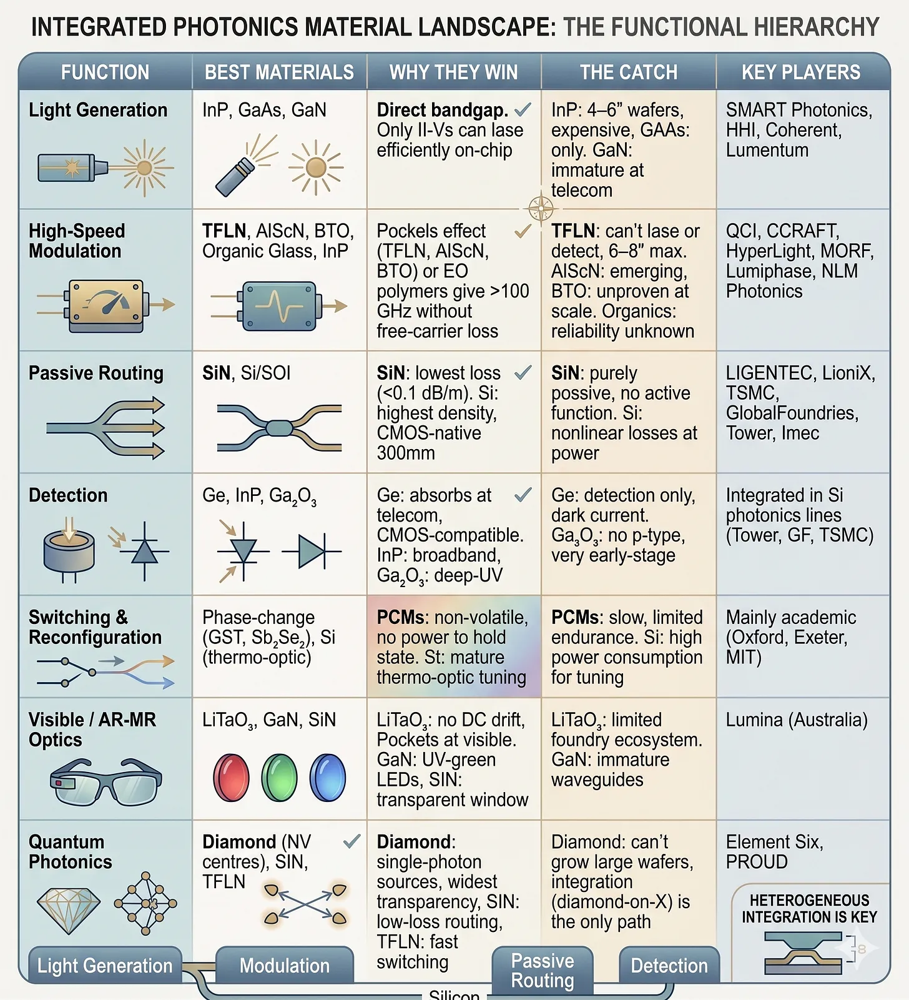

The Photonic Foundry Fallacy
The Biggest Opportunity in Computing

Photonics. amiright? I’m not wrong. If it’s a straight shot to AGI, we’re going to need a lot more optical bits and pieces, and ideally yesterday. Training a frontier model means tens of thousands of GPUs in the same data centre talking to each other constantly, moving petabytes between chips every second. The wires that have done that job since the 1960s (copper, basically) are running out of road (diligence pending). They burn too much power, generate too much heat, and can’t carry the bandwidth that next-gen AI clusters need.
Using light to move data isn’t new. We’ve pushed photons through optical fibre between continents for decades, because copper falls apart at distance. What’s changed is how close to the silicon the optics are getting. The boundary has crept inward for years, from undersea cables to cross-campus links to inside the data centre itself. AI is accelerating that inward migration. The frontier now is light between servers in a rack, between chips on a board, between chiplets inside a package, and eventually on the die itself, where photons never have to leave the silicon. Every step inward is harder than the last, because shorter distances mean tighter packaging tolerances and denser interconnects, and that’s exactly the regime where electrical links are giving up first. Which is why the chips that do the conversion (transceivers, modulators, lasers, the whole optical stack) are probably the most strategic component in AI infrastructure right now.
Everyone is scrambling to build that photonics stack. The existing CMOS fabs are doubling down on silicon photonics (SiPho) because it slots straight into the lines they already run, using the same wafers, lithography and packaging tools. It’s the cheapest route to “we do photonics now,” and the easiest story to tell investors. Tower Semiconductor is spending $920 million to 5x its silicon photonics wafer capacity. GlobalFoundries acquired AMF in Singapore. TSMC is tooling up co-packaged optics on its 300mm line.
The startups are going full disruption. Silicon is the past, they say. For losers, they say. They’re picking an exotic material and building the fab and tooling around it. HyperLight and QCi on thin-film lithium niobate (TFLN), lovely stuff for high-speed electro-optic modulation but no use for generating or detecting light. Ligentec on silicon nitride (SiN), ultra-low-loss waveguides and not much else on its own (though they’re expanding to multi-platform). Smart Photonics on indium phosphide (InP), the only material that can generate light natively, and also the most expensive and lowest-yield to manufacture. Different strategies but the bet is still a single material.
Contrarian bet alert. What if they are wrong? I believe most of them are organising around the wrong principle. Single-material fabs are obviously useful, but the mental model imported from CMOS (pick a material, scale the wafer, drive down cost per die) breaks down when no material can do everything you need.
The organising principle should be integration.
It’s heterogeneous integration all the way down, folks. From the orchestration to the chiplets to the manufacturing. He who integrates wins the AI race. (Whadup Callosum)

Have a gander at that table from Gemini. Lots of letters etc. Doesn’t matter a great deal, unless you are a massive nerd! The “key takeaway” is thus: No single material appears in every row without a chunky compromise. That’s the core of my argument. I will dispense this advice now.
I. Analogy
The semiconductor industry has one overwhelmingly successful organising principle: silicon. Start with a silicon wafer, etch transistors into it, scale the process node. Everything in the same material system, on the same wafer, in the same fab. This is the TSMC business model: standardise the platform, designers innovate on top.
It’s natural to look at photonics and think the same playbook applies. Pick your champion material. Lithium niobate for fast modulators, InP for on-chip lasers, SiN for low loss, silicon for CMOS compatibility. Go deep, go vertical, optimise, and scale. Lovely business model you’ve got there. It would be a shame if, it was, disrupted….
The analogy relies on a property silicon has that no photonic material does: silicon does everything adequately. It switches, conducts, insulates, and amplifies. Not always best-in-class, but “good enough” across every function so that integration on a single substrate wins on cost and density. Photonics doesn’t have an equivalent. The physics forbids it.
You absolutely need III-V semiconductors (indium phosphide, gallium arsenide) to generate light. Can’t get around it. Silicon has an indirect bandgap; it physically cannot lase efficiently. You need lithium niobate or electro-optic polymers for high-speed, low-loss modulation, because silicon’s plasma dispersion effect hits a wall around 50–60 GHz. You need silicon nitride for ultra-low-loss waveguides. You need the OG semiconductor, germanium, for detection. That’s five or six materials for a basic photonic link: generate, modulate, route, and detect.
The closest thing to a photonic silicon is probably indium phosphide, which can lase, modulate, route, and detect on one substrate. Smart people argue it’s the true platform play. But InP’s waveguide losses are 10–100x worse than SiN, its wafers top out at 6 inches (for now, tbf), and its fabrication costs make it uneconomic for high-volume applications.
The obvious move would be to scale it: build 12-inch InP and watch the cost problem disappear. People try. InP is grown using a process called liquid-encapsulated Czochralski, which means dipping a seed crystal into molten indium phosphide and slowly pulling it upward while it rotates, letting a single-crystal cylinder (the "boule") grow downward from the seed. Defect density rises sharply with diameter, indium itself is expensive and you need more of it per wafer, and the entire fab equipment ecosystem is built for ≤6 inch with no volume demand to justify retooling. The 8-inch InP roadmap has been “two years away” for well over a decade. The constraint is crystal physics.
This isn’t a temporary problem waiting for better engineering, either. Silicon will never have a direct bandgap. Lithium niobate will never absorb light efficiently for detection. These are properties of the crystal structure. You can’t just throw money at it.
II. Multi-Materials
Alright hands up. You got me. It’s not quite as binary as I’ve suggested so far. Single-material cathedral vs. material-agnostic platform is obvs too clean. Nobody serious is truly single-material anymore. Tower does Si + Ge + SiN on its line. GlobalFoundries does similar. Saying the industry is stuck on single materials makes for a great old versus new story, but is a bit crude.
The real question is subtler as always: is multi-material capability a side project bolted onto a silicon photonics line, or is it the organising principle the facility is designed around? Most of the industry is on the first path. Tower’s adding materials incrementally. GF acquired AMF for silicon photonics capacity with some SiN capability attached. TSMC is extending its 300mm CMOS line to handle photonics. In each case, the foundation is silicon and other materials get added where customers demand them.
I’m arguing for the second path. A facility where the core competence is the process of combining materials, where the equipment decisions, the engineering hires, and the IP strategy are all organised around integration. A handful of European foundries (LIGENTEC, CSEM, and others) are getting closest, offering multi-material photonic services within a single fab ecosystem. But these are exceptions. In most cases, multi-material is a research capability grafted onto a production line that was designed for something else.
The gap between demonstrating multi-material integration in a lab and offering it as a reliable, repeatable manufacturing service is vast. I know that. But closing that gap is the opportunity.
III. Coupling
The silicon photonics camp argues the gap doesn’t matter. They say silicon is already shipping in volume, integration is a problem you can solve later, and one material plus a few external bolt-ons is good enough for the next decade of AI bandwidth.
Maybe? Intel ships millions of pluggable transceivers, the optical modules that slot into a switch port and convert electrical signals into light for transmission over fibre. Broadcom’s Bailly and Tomahawk 5 use silicon photonic engines. Cisco, Marvell, and a dozen others have silicon photonic products in hyperscale data centres right now. They bolt on an external III-V laser, accept the coupling loss, and move on. Good enough, we’ve got datacentres to build and tokens to serve, I don’t care about your 3 year roadmap to MVP.
Today, sure. But what about three years from now? Every external laser needs active alignment (expensive), discrete packaging (bulky), and optical coupling that burns 1–3 dB at every interface where light has to hop between chips. That doesn’t sound like much, but optical power budgets in a transceiver are tight. A few dB here, a few there, and you’ve smashed through the headroom that determines whether the link closes at all.
At today’s 800G per lane, the bolted-on architecture has enough margin to absorb those losses. At 3.2T per lane, where AI interconnects are heading by 2028, it doesn’t. Every dB lost at a coupling interface is a dB you can’t recover at the receiver, and at that bandwidth you don’t have any to spare.
You might also argue that photonics should follow the semiconductor playbook of specialisation: logic fabs, memory fabs, analog fabs, all separate businesses. Five excellent single-material foundries, each mastering one function, assembling the results into a module at the end. The problem is the same: coupling loss.
This is where electronic and photonic integration diverge. In electronics, you can wire-bond or bump-bond a logic die to a memory die and lose basically nothing. Electrons don’t care much too much about interfaces. Photons care so much. Every time light crosses from one separately fabricated chip to another, you lose signal. The only way to hit the loss budgets that next-generation AI interconnects will demand is monolithic integration: bonding or depositing different materials on the same substrate so light never has to leave the waveguide.
So, the thing is, you are gonna need new materials, someday soon.
IV. PDK
As we all probably know, TSMC’s moat is the design ecosystem, not really the fab. Well obviously unbelievable quality, sure that’s a given. But also the PDK, the IP libraries, the EDA tool partnerships, the thousands of engineers who know how to design for TSMC processes. When a designer starts a project, the first decision is which foundry PDK to target. Once that decision is made, switching costs are enormous. The fab matters, obviously, but the design infrastructure is the moat.
Photonics has single-material PDKs today. Tower has one, GlobalFoundries has one, imec’s iSiPP platform has one. If you’re designing a silicon photonics chip, you can simulate it, lay it out, and send it to fab with reasonable confidence that what comes back will work. These PDKs are the reason silicon photonics has customers and revenue right now, and they’re a genuine competitive advantage that integration-first startups don’t have.
What nobody has is a multi-material PDK. There’s no design kit that lets you simulate a III-V laser bonded to a TFLN modulator on a SiN interposer. No simulation tool that handles the optical, thermal, and mechanical interactions between heterogeneously integrated materials in a single model. No design rules for multi-material alignment tolerances, bonding interface properties, or cross-material coupling. None of this exists.
Whoever builds it creates lock-in that dwarfs anything in single-material photonics. If you’re the first foundry with a multi-material PDK that designers can actually use, with EDA tool support and IP libraries for common building blocks, then every designer who targets your platform is stuck. Training, validated designs, IP, all tied to your process. That’s the real TSMC analogy, and it’s a stronger moat than the fab itself. I find it sort of astonishing that this doesn’t come up more in foundry pitches. I’ve seen many a photonic foundry deck in the last two years and only a few mentioned design infrastructure at all.
The tricky bit is building a multi-material PDK. You need experimental data on every material combination, every bonding process, every interface. You need to validate the PDK against real fabrication results across multiple process runs. This takes years, not months, and the capex is higher than *most* VCs want to hear about. But a validated multi-material design ecosystem compounds over time in a way that fab capacity alone never does.
V. Packaging
If you want a semiconductor analogy for photonic integration, advanced packaging is tempting. ASE, Amkor, and JCET take finished dies from different foundries and assemble them into working systems. TSMC’s CoWoS division has become arguably its most strategically important capability (it puts together all Nvidia chips). The packaging house doesn’t need to understand transistor physics; it needs to understand how to put different things next to each other and make them work. Photonic integration looks like the same problem.
But the economics. Woof, less than ideal. ASE’s net margin is about 7%. TSMC’s is about 40%. The most valuable company in the semiconductor supply chain is a single-material fab, not a packaging house. If photonic integration maps to electronic packaging, I’m inadvertently arguing for the business with the worst economics in the industry.
I think photonic integration is genuinely different from electronic packaging though, but it is a bet. Electronic packaging is assembly: bonding finished dies onto substrates with solder bumps and redistribution layers. Relatively standardised steps, thin IP layer, and even thinner margins. Photonic integration is process engineering at the material level: epitaxial bonding of III-V films, TFLN thin-film deposition, sub-micron waveguide alignment across material interfaces. The IP is in the process recipes. That’s closer to TSMC’s process IP than ASE’s assembly IP. But nobody has proven this can command TSMC-like margins in practice. Until someone builds a commercial multi-material photonic line and shows the gross margins, the packaging analogy and its 7% margins remain the base case. The truth is that photonic integration might be a genuinely new category we don’t have a template for yet.
VI. Opportunity
The multi-material photonic foundry doesn’t exist yet. Not really. There are research lines at MIT, at imec, at CSEM, at a handful of European institutes. Startups nibbling at pieces of it. But nobody has capitalised a facility whose singular mission is a material-agnostic photonic integration at scale. Maybe because it’s just too hard to say?
Why has no-body built this yet? (Such a VC now, sad state of affairs) First, it’s pretty hard; combining materials with different thermal budgets, different lattice constants, and different processing chemistries on a single line is just a hard thing to do. Second, the market hasn’t demanded it yet, most photonic products today are simple enough to get away with one or two materials. Third, the VC and government funding models default to the CMOS analogy. “We’re building the TSMC of lithium niobate” makes intuitive sense to investors. “We’re building a material-agnostic integration facility with a multi-material PDK” is a harder sell.
I see a few ways this could play out.
A single-material incumbent (Tower, GlobalFoundries) makes a strategic decision to treat integration as its organising principle, hires the process engineers, invests in the bonding and deposition capabilities, builds the multi-material PDK.
A well-capitalised startup greenfields the whole thing. Hard to fund, but classic first principles thinking. Why not put the servers in space, Elon-style thinking.
An advanced packaging company (ASE, Amkor) extends into photonics.
We can assign probabilities to each scenario, 25% this and 10% that, but, I’m a VC, even if there is a 2% probability of scenario 2, the outcome is so large, it’s worth the bet. And come on, with AGI just sitting there waiting to be grabbed, let’s try and win shall we? Why should ASE and Tower have all the fun?
And beyond 2, even if 1 or 3 plays out, there are a ton of huge new opportunities. The process IP for bonding III-V films to silicon wafers. Deposition recipes for exotic thin films: Aluminium scandium nitride (AlScN) can be sputtered directly onto silicon at back-end-of-line temperatures, giving you a TFLN-class modulator without the exotic substrates. Diamond-on-X for depositing diamond thin films onto silicon or SiN. Simulation tools for heterogeneous optical systems. PDK components, micro-transfer printing. Maybe start in one of them and vertically integrate over time?
VII. Integration
The race to build photonic manufacturing capacity is real, and accelerating fast. Nvidia’s $4 billion in Lumentum and Coherent. Tower’s $920 million silicon photonics capacity expansion. GlobalFoundries acquiring AMF. TSMC tooling up its 300mm line. Billions flowing into photonic manufacturing in real time.
Most of that capital is going into single-material capacity. I think the value will go elsewhere: in the integration processes, the multi-material PDK, and the design ecosystem that will eventually lock in photonic designers the way TSMC’s ecosystem locks in chip designers today. But the timing is uncertain. The current market can mostly get by with silicon photonics plus an external laser. The coupling loss wall that forces monolithic integration might be two years away or seven.
So if you’re building or investing in photonic manufacturing, ask yourself: is this facility organised around a material or around a process? And if it’s a process, is there a design ecosystem that creates lock-in? Material without integration = component supplier. Integration without a PDK = custom shop. Integration with a design ecosystem = platform. I keep coming back to this hierarchy when I look at photonics pitches.
Could I be wrong about all of this? Obviously. Maybe silicon photonics will power through the scaling wall the way CMOS always has. Maybe InP’s wafer economics will improve enough that the Swiss Army knife works after all. Maybe the specialisation model (five great single-material fabs, assemble at the end) will find ways to manage coupling loss that I’m not seeing. Probably not. But possibly.
Either way, I’m looking for the founders who understand the integration problem. If you are in Europe, even better. If you are in UK, whatapp me. If you are in the Brighton and Hove local area, meet me at Taith Coffee on the High Street today at 13:00. IYKYK. If you’re building a photonic foundry organised around a process rather than a material, designing a PDK that spans III-V and silicon and SiN, or attacking coupling loss at the monolithic level before the bandwidth wall gets there first, I want to talk.
Let’s get at it. lawrence@cloudberry.vc.